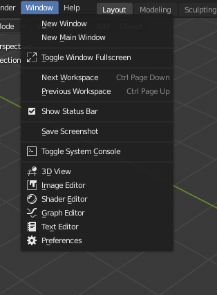

Welcome to the official DuViews documentation.
DuViews is a very simple addon for Blender which adds items in the Window menu and a new pie menu to quickly open new windows with a single space, from anywhere in Blender. It is very useful when you temporarily need to work in a specific area for example, but you want to keep your current workspace as it is.
License
DuViews is licensed under the GNU General Public License v3.
This documentation is licensed under the Gnu Free Documentation License.
Install
The add-on can be downloaded from Rainbox Lab..
Then, you can install it from the preferences of Blender, Add-ons tab. Once installed, it will be listed in the Pie Menu section where you can activate it.
Note
This add-on works only with Blender 2.8 and more recent versions.
Settings

In the preferences of Blender, you can set the default size of the new windows.
Usage

Some items are added in the main Window menu of the top bar.

You can also quickly open windows from a pie menu with the [Ctrl] + [W] shortcut.
Last Modified on